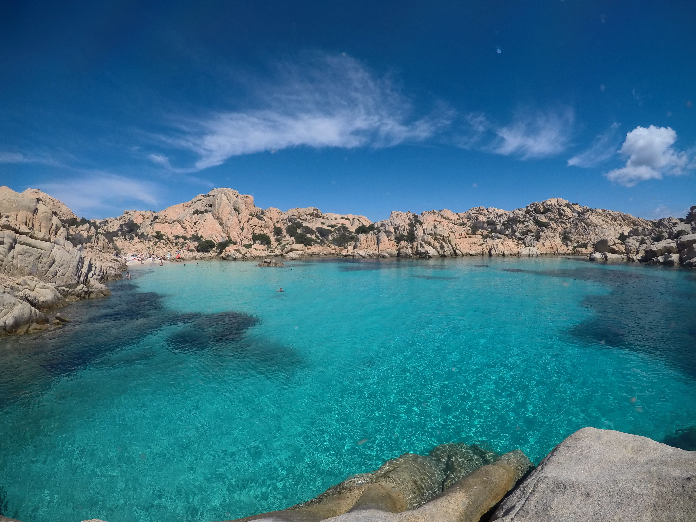
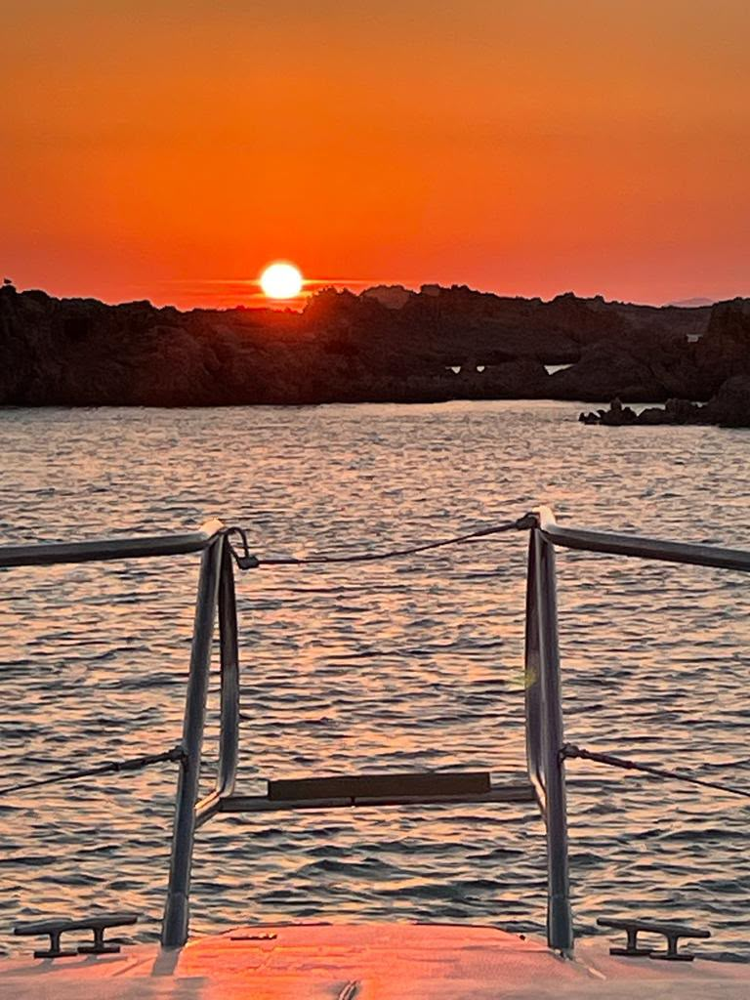

I nostri itinerari
Dalle acque cristalline dell'Arcipelago della Maddalena agli scorci più intimi della Costa Smeralda. Progettiamo ogni uscita su misura per regalarvi una giornata indimenticabile, accompagnata da un servizio impeccabile.

Tour Classico Il Parco Nazionale e le sue IsoleGiornata intera
Il nostro tour più amato vi guida alla scoperta del Parco Nazionale. Navigheremo tra le isole di Spargi, Budelli, Santa Maria e Razzoli, circondati da acque turchesi mozzafiato e monumentali rocce di granito scolpite dai venti.
Il servizio a bordo è attentamente gestito per offrirvi il massimo del relax, con bevande fresche sempre incluse. Il vero lusso si esprime però nella flessibilità per la vostra pausa pranzo:

Tour Breve Pomeriggio e TramontoSoluzione versatile
Per chi preferisce un'esperienza più breve o ricerca un'opzione flessibile senza rinunciare ai comfort di un charter privato, proponiamo un itinerario affascinante lungo le baie più rinomate della costa continentale.
Esploreremo le acque calme e cristalline di Cala Granu, i ridossetti esclusivi di Porto Sole e gli scenari iconici del Golfo Pevero. È la scelta perfetta per mezza giornata di tuffi e relax assoluto, ancor meglio se coronata da un aperitivo indimenticabile al calar del sole direttamente dal ponte della nave.
Prenota il Tour BreveTariffe e Preventivi
La politica delle nostre tariffe è totalmente personalizzata. Il costo finale del noleggio varia a seconda dell'itinerario concordato, della durata dell'escursione e del periodo in cui sceglierete di salpare. Il carburante verrà sempre conteggiato a parte in base al tragitto effettivo.